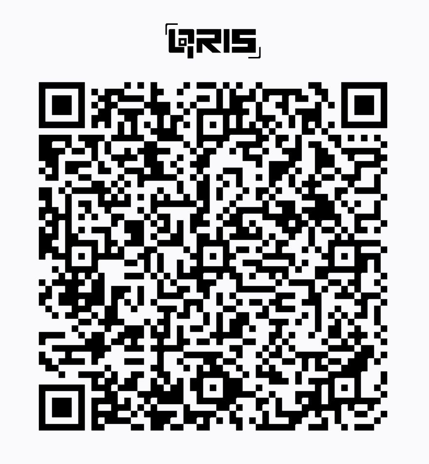

Quick themes
Pick a vibe. Your choice is remembered.
Quote sources
Curated from books, movies, games, anime, and more.
- Books & literature
- Movies & series
- Games
- Anime & manga
- General inspiration
Browse and contribute on GitHub:
yudafhd/katahari
Support development
If this little extension brightens your day, consider buying a coffee. Thank you!

QRIS (ID)
Global